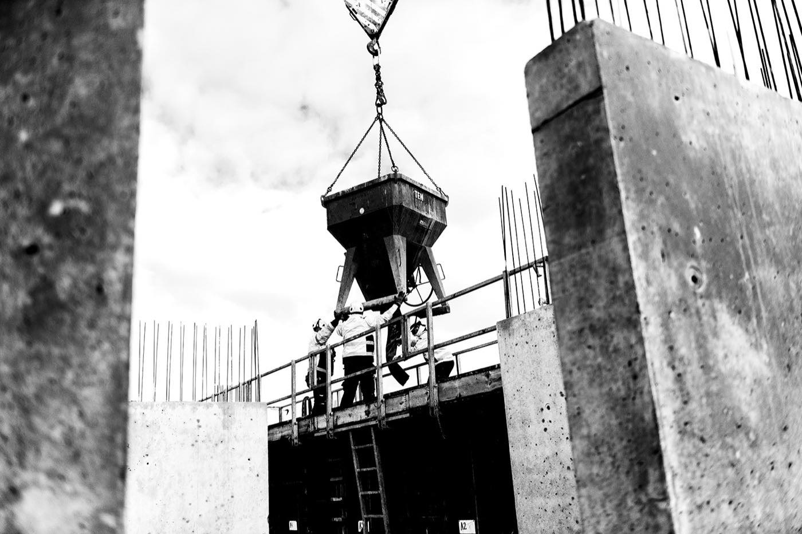
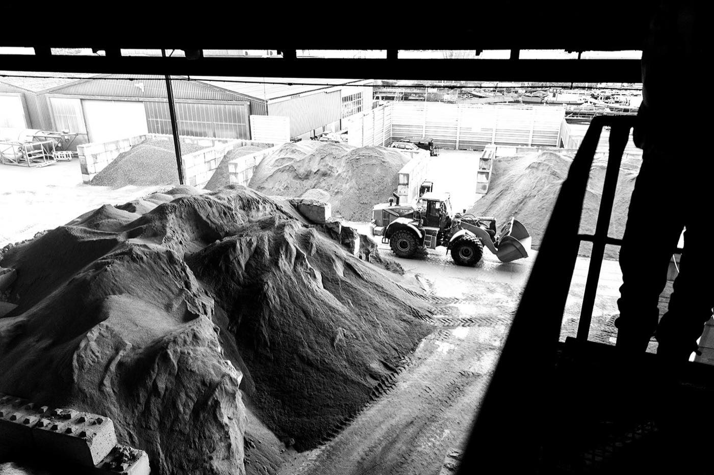

Rechtstreeks uit onze fabriek in Zaandam · Liberated Concrete™
Circulair beton. Je prijs in 60 seconden.
Gecertificeerde betonmortel, gemaakt en geleverd door ons vanuit onze eigen fabriek in Zaandam. Tot 80% minder CO₂, vanaf 1 m³.
Vóór besteld, de volgende werkdag geleverd. Met onze eigen trucks, zolang er plek is in de planning.
Particulier en kleine klussen
Tuinhuis, terras, oprit of fundering?
Zie direct je exacte prijs en boek online een levermoment.
Vanaf per m³ incl. btw ( excl. btw).
Bereken direct je prijsZakelijk en aannemers
Bouwplaatsstort, heiwerk of grondwerk?
Voorrang bij de planning, betalen op factuur en een directe lijn met onze planners.
Eenmalig een grotere stort? Offerte binnen .
Zakelijke aanvraag- Gecertificeerd volgens NEN-EN 206 / NEN 8005 · bekijk de certificaten
- 63–80% minder CO₂ dan referentiebeton
- Een planner bevestigt voordat je betaalt
Architect, constructeur of hoofdaannemer? Specificaties, CO₂-certificaten en projecten vind je op sl-materials.nl, of bel ons team op 020 280 59 00.

Echt beton. Zonder concessies.
Liberated Concrete voldoet aan precies dezelfde normen als traditioneel beton. Het is geschikt voor elk onderdeel van de bouw, van hoogbouw, tunnels en bruggen tot funderingen, opritten en tuinhuisjes.
- Net zo sterkDezelfde sterkteklassen en certificeringen als traditioneel beton. Het presteert minstens even goed, en soms beter.
- Gemaakt om lang mee te gaanGecertificeerd volgens dezelfde duurzaamheidsnormen als traditioneel beton: de normen waarop bruggen, tunnels en hoogbouw worden gebouwd.
- Gecertificeerd en gecontroleerdElk mengsel is gecertificeerd, heeft een milieuproductverklaring (EPD) volgens EN 15804 en wordt gecontroleerd door ons technische team, dat je ook helpt kiezen.
- LokaalEen Amsterdams bedrijf dat beton maakt in onze eigen fabriek in Zaandam.
Je prijs. Direct.
Kies je beton, zie de kosten en boek je levermoment.
Zo werkt het

Kies je mengsel
Per project of per mengselcode, met direct je prijs.
Wij bevestigen, dan betaal je
Een planner belt om de details te controleren. Je betaalt alleen het bevestigde bedrag.
Vers geleverd
Gemengd in Zaandam en geleverd in je ochtend- of middagslot.
Een grotere klus? Vraag een zakelijke prijs aan.
Mail ons wat je nodig hebt en je krijgt binnen een prijs. Vaste klanten krijgen voorrang bij de planning, , een vaste contactpersoon bij de planning en de documenten die je constructeur nodig heeft.
Veelgestelde vragen
Is Liberated Concrete net zo goed als gewoon beton?
Ja. Het voldoet aan dezelfde normen als traditioneel beton, heeft dezelfde certificeringen en presteert minstens even goed, soms beter. Je kunt het overal gebruiken waar traditioneel beton wordt gebruikt, van funderingen van woningen tot hoogbouw, tunnels en bruggen.
Waarom kiezen voor Liberated Concrete?
Dezelfde kwaliteit, dezelfde marktprijs en 63–80% minder CO₂ dan referentiebeton. Het wordt gemaakt van oud beton, dus er hoeft geen nieuw zand, grind of cement te worden gewonnen of gebrand.
Gaat het net zo lang mee als gewoon beton?
Ja. Het is gecertificeerd volgens dezelfde sterkte- en duurzaamheidsnormen als traditioneel beton, dezelfde normen die gelden voor bruggen, tunnels en hoogbouw.
Wie is SL Materials?
Een Amsterdams betonbedrijf, opgericht door de Rutte Groep. We maken Liberated Concrete in onze eigen fabriek in Zaandam. Meer over ons.
Wat is de minimale bestelling?
Online 1 m³. Onder 10 m³ betaal je één keer bezorgkosten; vanaf 10 m³ is de levering bij de prijs inbegrepen. Je ziet alles in je prijs voordat je bestelt. Voor minder dan 1 m³ is zakgoed van de bouwmarkt meestal voordeliger.
Hoeveel moet ik bestellen?
Gebruik de rekenhulp in het bestelformulier. Die telt 10% extra op voor verlies en een oneffen ondergrond. Online bestel je tot 48 m³; voor meer vraag je een offerte aan.
Welk mengsel heb ik nodig?
Kies je project in het bestelformulier en je krijgt direct een advies. Twijfel je nog? Bel of mail ons verkoopteam via , dan helpen we je.
Hoe lang kan de truck wachten?
Bij elke levering is tot 30 minuten lostijd inbegrepen. Daarna rekenen we wachttijd: € 60,50 incl. btw (€ 50 excl. btw) per 15 minuten. Ga je met kruiwagens werken? Zorg dan dat er genoeg mensen en kruiwagens klaarstaan.
Kunnen jullie het beton verpompen?
Ja. Kies 'Pomp, via SL' en wij regelen een betonpomp. De pomphuur is €560 excl. btw per levering en staat als aparte regel in je prijs. Om te pompen is een vloeibaar mengsel nodig (S3 of S4).
Waar leveren jullie?
Binnen ongeveer km van onze fabriek in Zaandam, waaronder Amsterdam, Haarlem en Purmerend.
Hoe betaal ik?
Je betaalt pas als je bestelling is bevestigd. Een planner belt om alles door te nemen en direct daarna krijg je een betaallink (iDEAL) voor het bevestigde bedrag. Zakelijke klanten kunnen betalen op factuur aanvragen.